Filip Frahm
With recent news about NSA surveillance, large scale data collection seems to have a negative connotation in our society. While fear for ones' privacy is justified,large scale data collection can be of tremendous benefit. An application of it that stands out is the imrpovement of our society's health. At the University of Edinburgh, researcher Andy Sims is using bioinformatics and genetic data to predict which cancer drugs are most appropriate for a breat cancer patientL3. In San Francisco, Google-backed company CalicoL2 gained access to Ancestry.com's genetic database with the intention of using genetic and family tree related data to improve the human lifespanL1.
The goal for our project was to create a vest that would 1)have as many health related sensors as possible and 2)process and present that data to the user. We believe that such a vest would not only be attractive for personal use but that it could, similarly to the examples above, also advance medical research by providing data. In the duration of the course, a temperature sensor and an electrocardiogram(ECG) were installed to a vest. Further, a website and mobile application were created to process and present the data. While a respiratory sensor has not yet been integrated to the vest some research regarding future applications of such a sensor has been completed.
My role in the project was to process data. Data processing included the conversion of data from the ECG to a beats per minute(BPM) value. Additionally, it was my task to explore potential uses of a respiratory sensor (RESpeck).
ECG Data Processing
Specifications
The requirements for the ECG data processing code (BPM code) were to take ECG data from the server and to then return a BPM. Data passed from the server would be in a python dictionary with unix timestamps as keys and integers representing voltage (voltstamps) as values. Voltstamps theoretically range from zero to 1024 but only range from zero to around 360 in practice. In available data, data points were typically between 0.001 and 0.05 seconds apart. In order to be able to provide a live BPM feed, the BPM code was to be applied to a moving window with length between zero and ten seconds. Of course this moving window always consists of consecutive data points.
Method
The BPM code can be divided into two major parts. The first and more computationally expensive one parses through a given window of data and attempts to identify the timestamps and voltstamps of heart beats. In the process, more information about the data is collected. The second part of the code uses the previously collected information to predict how many beats would occur over 60 seconds.
Beat Detection and Step Structure
ject the approach to finding a beat detecting method was somewhat manual. A method that would theoretically detect beats would be chosen and then tested against available data. This led to some issues. Firstly, little data was available for testin and the manual approach allowed little flexibility. As a result, methods would frequently work for small samples, but not be flexible enough to work for larger samples. Secondly, the varying density of datapoints, requires more versatile methods. A combination of different methods was required to attain a good output.
To avoid the above-listed issues, a computational approach was pursued. Instead of choosing methods manually, a fixed structure (the step structure) was created. The step structure itself remains the same, but it allows for the choosing of different combinations of methods and benchmarks within it. To determine the optimal combination of methods and benchmarks a testing environment was created (detailed in Testing). The computational approach doesn't just try more options and parse more data than the manual approach, it also easily adapts to new data.
The step structure code starts with the window of data as described before and ends with a dictionary of suspected beats. It does so in four steps outlined in Figure 2. The individual methods(or conditions) for each step are described in Figure 3.
| 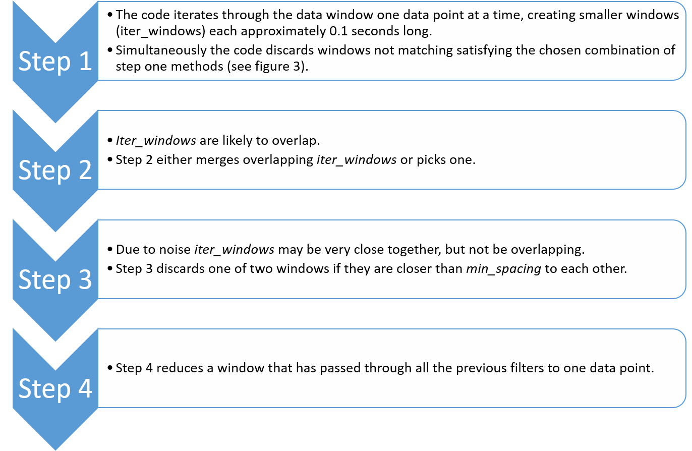 |
| Figure 2 - The Step Structure |
| 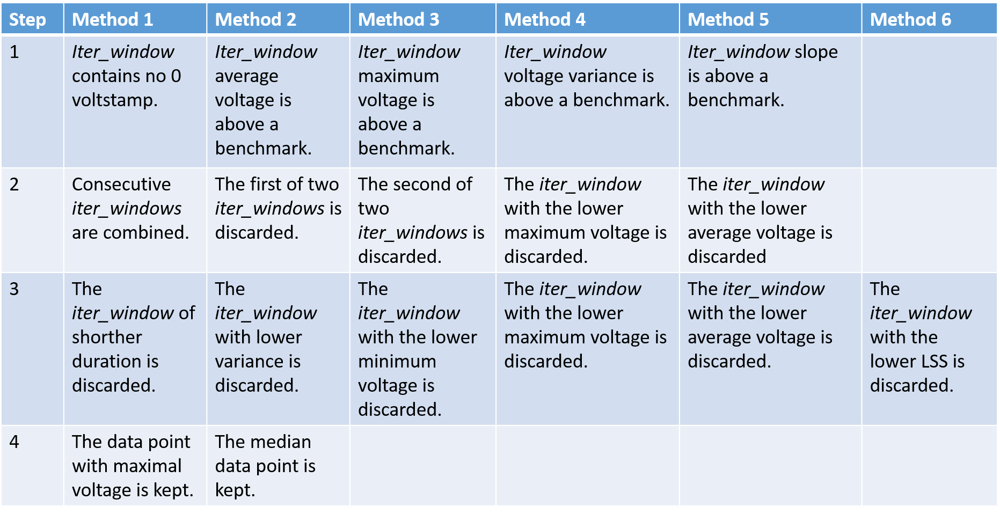 |
| Figure 3 - Table of all considered methods |
Note that for all the step one conditions any of the following five logical statements can be applied to the condition:
- Whether the condition is met or not has no impact on the selection of the iter_window.
- If the condition is met, the iter_window will be selected regardless of the results of other methods.
- If the condition is not met, the iter_window will be selected regardless of the results of other methods.
- Unless 2) or 3) occurs, this condition must not be met for the iter_window to be selected.
- Unless 2) or 3) occurs, this condition must be met for the iter_window to be selected.
As a result of testing (detailed in Testing), the best choice of benchmarks and methods emerged to be a combination of variance detection and minimum votlage.
Beats per Minute
The idea of the BPM is not to project how many beats a user will have in one minute, but rather to let the user know how many beats in a minute he would have at the current rate. This makes the generation of a BPM value simple (since the beats have already been identified). We simply divide 60 seconds by the average time between beats.
Simplifying,
| Figure 4 - BPM Manipulations |
Error Detection and Adjustment
Since the ECG is easily affected by movement, the BPM code needs to adjust to unusable data. It does so in two ways. Firstly, it flags data windows with extremely high variance (variance > 60). Secondly, it discards iter_windows that contain zero voltstamps. In practice zero voltstamps only occur as a symptom of extreme noise (the normal range is 140 to 250). The percentage of iter_windows are used is then computed and used to adjust the BPM formula as described in Figure 5 below.
| Figure 5 - BPM Error Adjustment |
This adjustment is not correct. This method was chosen due to time constraints, but an alternative method is suggested implicitly in the criticism below. Given a data window such as the one in Figure 6 below, the effect of the error adjustment depends on where the error occurs. The issue with the current method lies in the fact that data outside of t1 and tn is not considered for the BPM but it is considered in the error adjustment. Figure 7 discusses different scenarios.
| Figure 6 - Data window timeline |
| 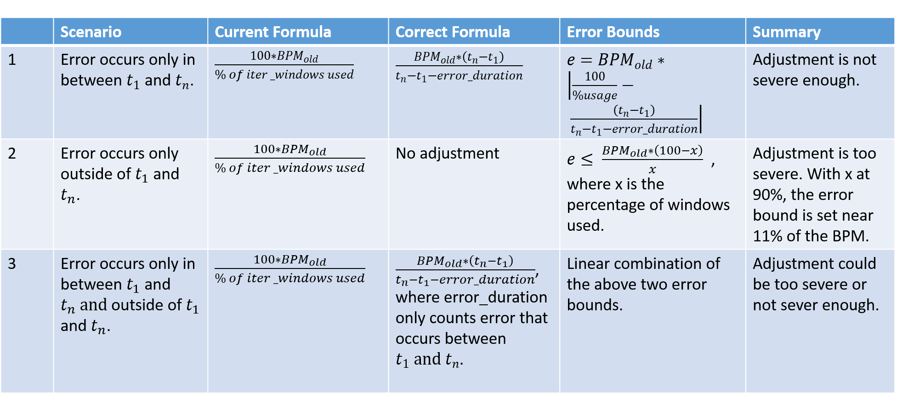 |
| Figure 7 - Criticism of Error Adjustment Factor |
In testing, data windows with high error rates (error > 10%) were discarded. Nonetheless, the above adjustment could cause significant error. Calculations for the above error bounds are provided in the Calculations seciont (Calculations 1).
Testing
The goals for testing were to determine the best possible benchmarks and combinations of methods (setting) for the step structure and to measure their effectiveness. Further objectives were to graph the effect of changing the minimum spacing between beats, the length of iter_windows and most importantly the length of data windows.
Testing Environment
Goals two through five quickly follow from goal one, so this section will focus on reaching goal one. A more mathematical way of formulating the problem would be to see all possible settings as a set (X). Testing them is equivalent to mapping this set to another set(Y), where each element is a measure of quality,to then choose the best quality and map it back to X. The idea behind the testing environment was to emulate this process. Of course X is far too large to test every setting. The limitations of the testing environment and their impact is discussed in Testing Procedure.
| Figure 8 |
| 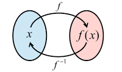 |
| Figure 9 |
Since the BPM code is contained in a file (services.py) which is then compiled and used in the server, the testing environment had to be created in a seperate file (local.py). Other specifications required for effective testing are described in Figure 10. Figure 11 displays how information moves between local.py services.py and a CSV file.
| 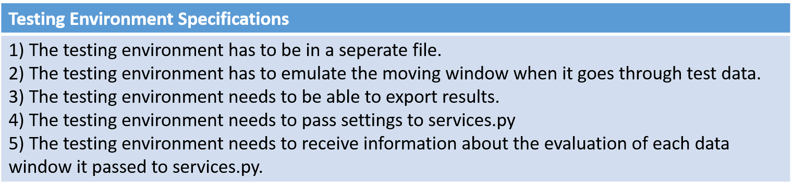 |
| Figure 10 |
| 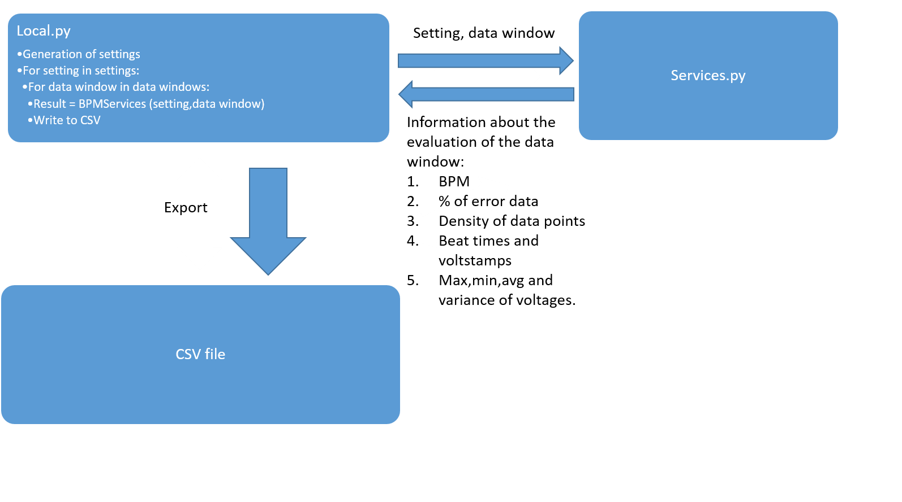 |
| Figure 11 - The Testing Environment |
Note that for testing purposes the order in which the code processes data windows is irrelevant as the BPM code draws no connection between consecutive data windows.
Measuring Quality
Referring back to the mathematical formulation of the problem, we need a function (f(x):X->Y) that measures the quality of a particular setting. As already suggested in the pseudo code of Figure 11, a Monte Carlo style approach was used to determine this funciton. First, a measure of quality for a particular setting and data window was defined (f_hat(x)). This measure of quality was then applied to as many data windows as possible (with the same setting) to generate an expected value for the quality of the setting (f(x)). Three measures were considered for f_hat(x).
| 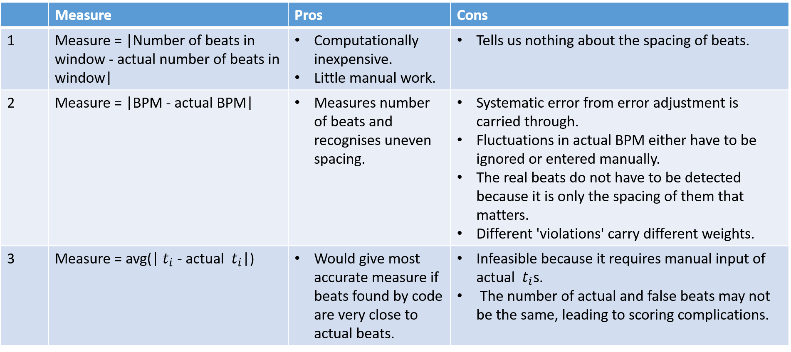 |
| Figure 12 - Measures of Quality |
Measure one is far too inaccurate to be of use and measure three is too impractical. Measure two has significant issues, but is the only viable method. Figures 13a and 13b show an attempt to quantify them. The errors are in deviation from the true BPM.
| 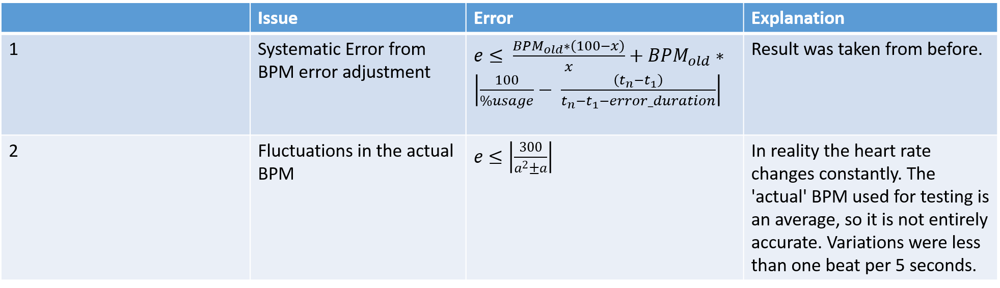 |
| Figure 13a - Error associated with using BPM as a measure of quality |
| 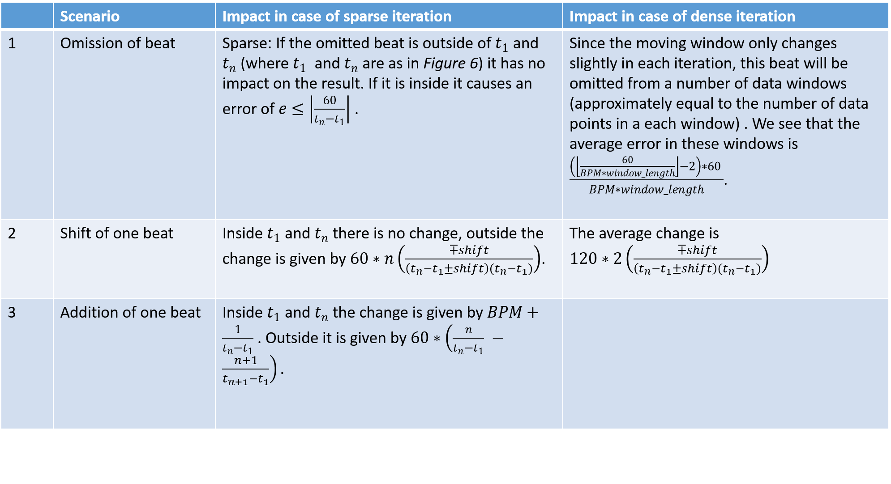 |
| Figure 13b - Impact on BPM of incorrect determining of beats. |
An issure not addressed in Figure 13b is that the spacing of beats does not always matter and different types deviation of the computed heart beats from the real heart beats have different impacts on the quality measure. In order to save computational cost not all available data windows were evaluated in the testing. This has further impacts on the quality measure. The results below were generated by considering a sparse iteration to be an iteration that uses each data point exactly once (for example by dividing all available data into evenly spaced data windows). Dense iteration was considered to be an iteration that fixes window length and only changes the window by one data points each iteration. Results for changes in the dense iteration are always presented as an average of the effect on all data windows relevant to the described deviation. To generate the results in Figure 13b it was assumed that all heart beats are read correctly except the ones described in each scenario.
Testing Procedure
In my experience, it took about 0.017 seconds for a data window containg 200 data points to be evaluated. 200 data points was chosen as window length because it typically correspond to 5 seconds, which is large enough to generate a BPM, but not so large that the spacing of beats can be uneven without strongly influencing the BPM. Having set restricted run time to 24 hours (personal choice) this allowing for roughly 5,000,000 data windows of size 200 to be evaluated. The data available, attached in Appendix 1, consists of 5.5 minutes of data from three different subjects. The data contains intentional movement to make testing more realistic. Other data not considered in the experiment was collected using electrodes. This was deemed irrelevant as there was significantly less noise. The 5.5 minutes of data corresponds to roughly 105,000 data points and therefore provide roughly 104,000 data windows to be evaluated. Additionally, there were 187,500 methods combinations to choose from along with 8 benchmarks and constants. This left a total of more than 1,000,000,000 data windows to be evaluated. Obviously this number is far larger than our limitation of 5,000,000.
By selecting the sparse iteration method the number of data windows to be evaluated was cut down to roughly 100,000,000. Further, the number of considered methods was reduced. Instead of the methods from Figure 3, only the methods from Figure 14 were considered. For more reductions in computational cost, the flow chart in Figure 15 was followed. This flow chart is clearly imperfect. Testing for the best methods and then using those results to test for constants and benchmarks leaves a gap. This approach limnits results to methods that work well with the chosen benchmarks and constants, preventing potentially effective combinations from being selected. I decided to test for methods first because I had a better feeling for which ranges would be acceptable for constants and benchmarks (from informal testing), but I had very little idea about which methods would work most effectively. Regarding the min_spacing, window_size and iter_window constants, I worked under the theoretical assumption that neither of them should have an impact on the data while they are within some accpetable range.
| 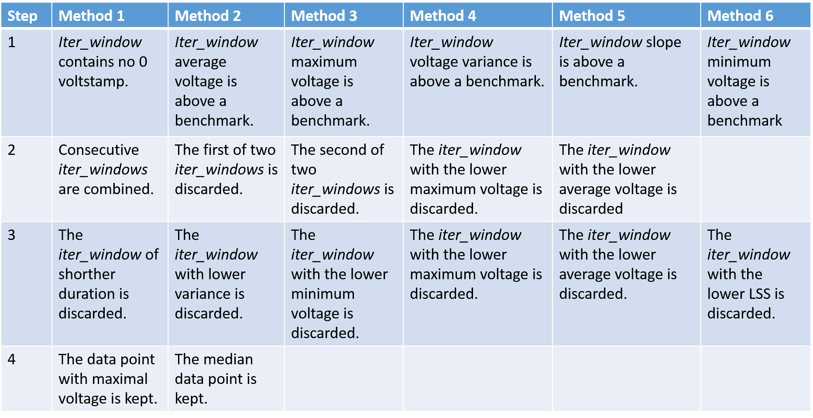 |
| Figure 14 - Methods used in experiment |
| 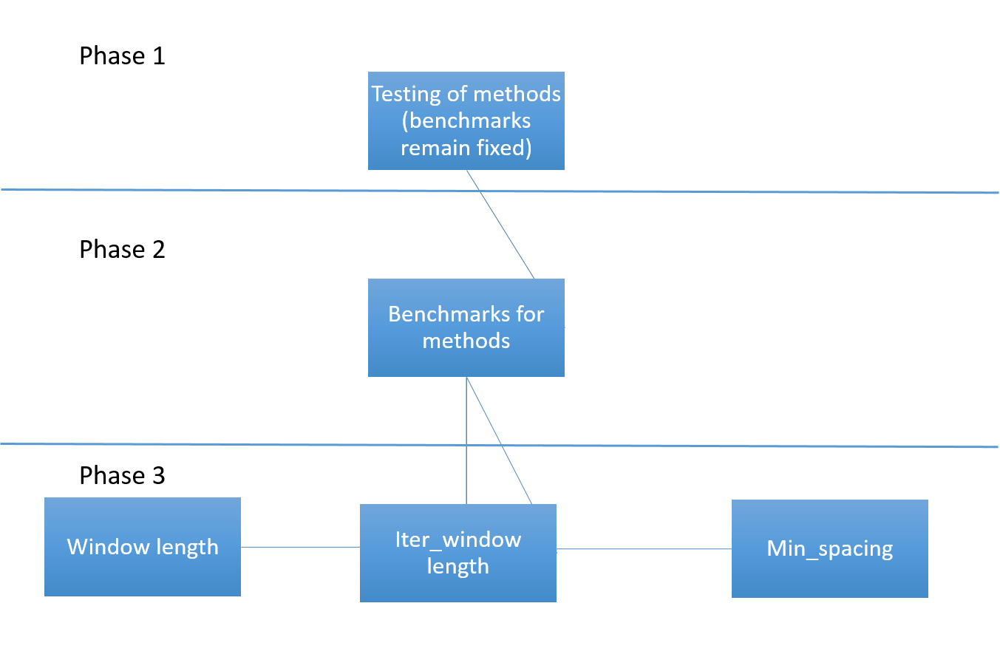 |
| Figure 15 - Computation Flow Chart |
This left 3967500 data windows to be evaluated for phase 1 testing.
Testing Results
The results of phases one, two and three can be found in Appendices 2 through 7. Elimination occured as described in Figures 16, 17, 18 and 19.
| 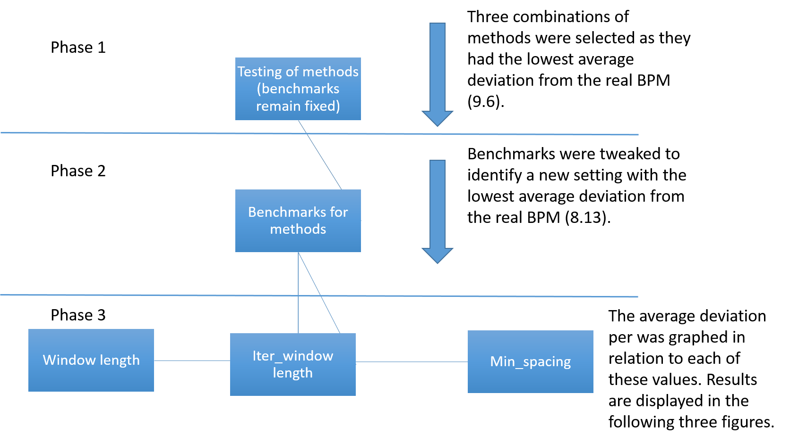 |
| Figure 16 - Flow chart version 2 |
| 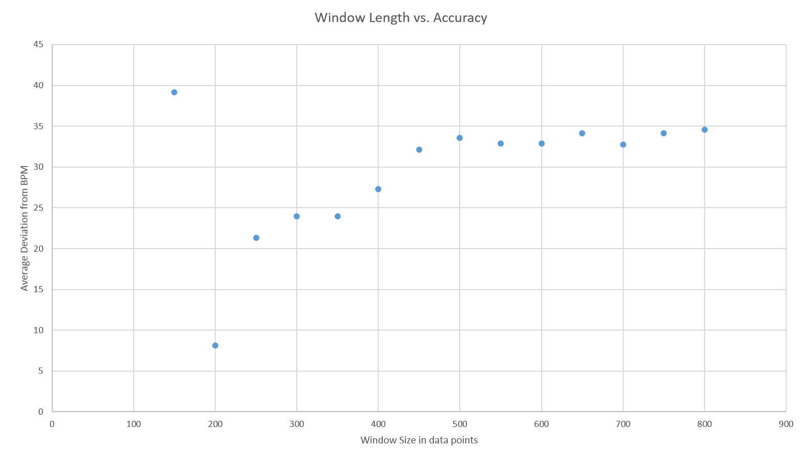 |
| Figure 17 - Window Length vs. Accuracy |
| 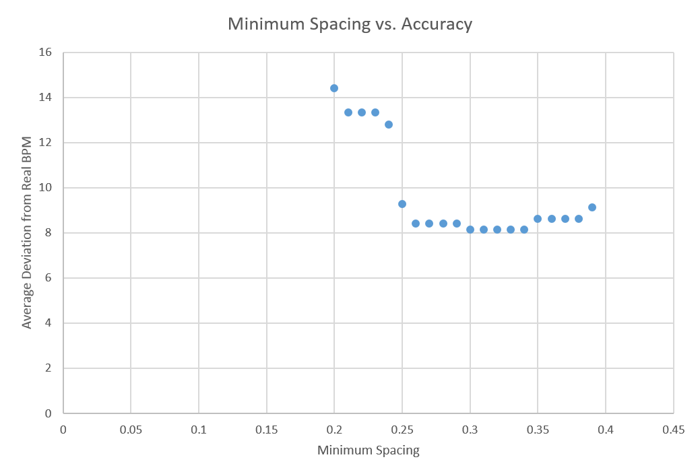 |
| Figure 18 - Minimum Spacing vs. Accuracy |
| 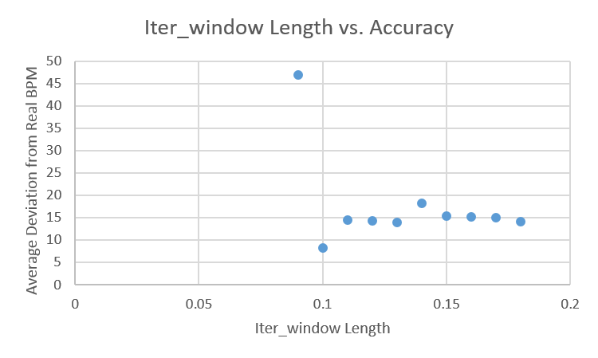 |
| Figure 19 - Iter_Window Length vs. Accuracy |
In order to better test the resulting setting, it was applied to the available data using dense iteration. The result was a variation of approximately 16 beats per minute.
Method Evaluation and Improvements
The phase 3 graphs from the previous section were slightly worrying as you would expect the accuracy of the BPM code to increase with window size. Instead, the accuracy decreased. While this may be partially attributed to increased exposure to error data(the sparse method was used) it suggests that the measuring criteria and testing procedure were flawed (the best solution is not generalisable). This notion is supported by the final test using dense iteration as BPM deviated twice as much. Figure 20 provides suggestions for improvement.
| 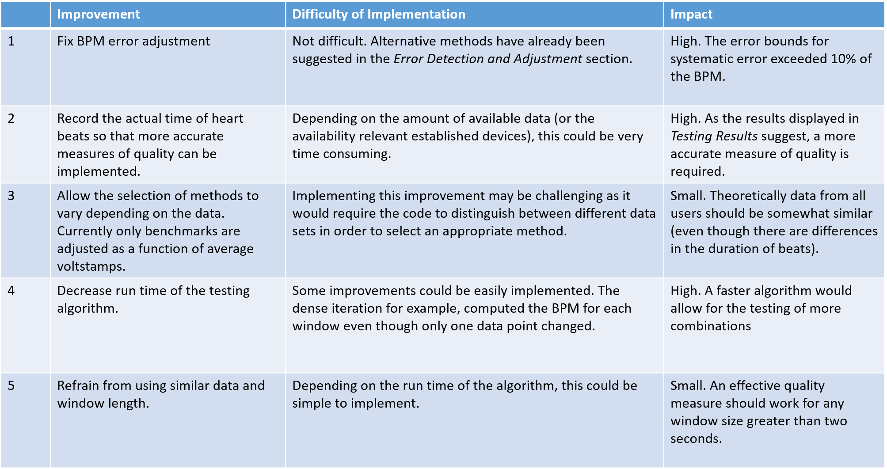 |
| Figure 20 - Improvements |
Respiratory Sensor Research
The purpose of this section is to explore potential future uses of a respiratory sensor as part of the UberVest. The two explored potential uses of respiratory monitoring (more specifically monitoring of breathing rate and mean inspiratory flow during recovery after exercise) were the ranking of users' fitness level and the diagnosis of respiratory disease. To determine whether breathing rate can be an effective measure of fitness, 10 participants with know fitness levels completed a set of exercises. Linear regression was applied to determine the least squares estimation of a formula for respiratory fitness (given breathing data in recovery from exercise).
In another experiment, mean inspiratory flow and heart rate during recovery after exercise were monitored in young healthy individuals to determine whether there was a correlation between the two. In some cases the comparison of expiratory flow to predicted expiratory flow is used to diagnose COPD [7]. This experiment was designed to develop some familiarity in making a similar diagnosis.
Mean Inspiratory Flow vs. Heart Rate Experiment
Method
- Measured breathing and heart rate at rest for one minute. People are more inclined to breathe abdominally when lying on their back and the respiratory sensor (RESpeck) measures breathing near the stomach, participants were asked to lie down on their back for all measurements of breathing and heart rate.
- Participants ran on the treadmill for five minutes at ten km/h.
- Measurements were taken as described in step 1. Measurements were taken until the heart rate calmed down to 99 BPM. Further cool down was deemed to time consuming.
- Participants ran on the treadmill while I increased the speed until participants asked me stop the treadmill. Participants ran at the following speeds; one minute at 10 km/h and 11 km/h followed by 30 seconds at each of the following speeds 12 km/h, 14km/h, 16km/h, 17 km/h, 18 km/h, 19 km/h, 20 km/h, 21 km/h, 22 km/h, 23 km/h and 24 km/h. The earliest participant to quit, quit after reaching 16km/h, the last quit after reaching 24 km/h.
- Measurements were taken as described in step 3.
Participants
Only five participants participated in the experiment. All of them are aged between 21 and 23 and are of good health. Four participants were male, one participant was female. No smokers participated and all five participants enjoyed recreational (at least weekly) exercise.
Data Collection and Processing
The respiratory sensor used is called RESpeck. It measures breathing near the stomach using an accelerometer. A data sample is attached in Appendix 5. Heart rate was measured using a POLAR FT4M device. The device failed for one out of five participants, requiring the heart rate monitor of the treadmill to be used. The heart rate as recorded by either device was filmed and synced to data collected using the RESpeck.
Little data processing was required for this experiment. Mean inspiratory flow is given by inspiiratory volume divided by inspiratory duration. The formula is derived from Figure 21.
| 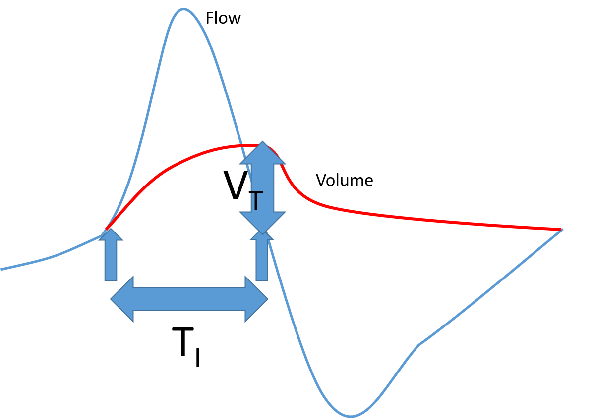 |
| Figure 21 - Inspiratory flow vs Volume |
Results and Evaluation (level 3 heading)
While heart rate decreased in a nice curve with increasing slope (see Figure 22), there was no recognisable pattern to the mean inspiratory flow during recovery from exercise (see Figure 23 ). The exception to this observation is Figure 24*. From subjective observations during the experiment, breathing seemed more aggressive initially and then cooled down. While it is likely that there is no trend, it is possible that the lack of trend in the mean inspiratory flow during recovery is a result of error in data collection. This error could be a result of participant movement or of the breathing signal being normalised. Since I am not fully aware of how the breathing signal algorithm works, I can neither confirm nor deny that notion. However, it is possible to conclude that in the generated data mean inpiratory flow is not correlated to heart rate.

|
| Figure 22 - Heart Rate vs Time during Recovery From Exercise |
| 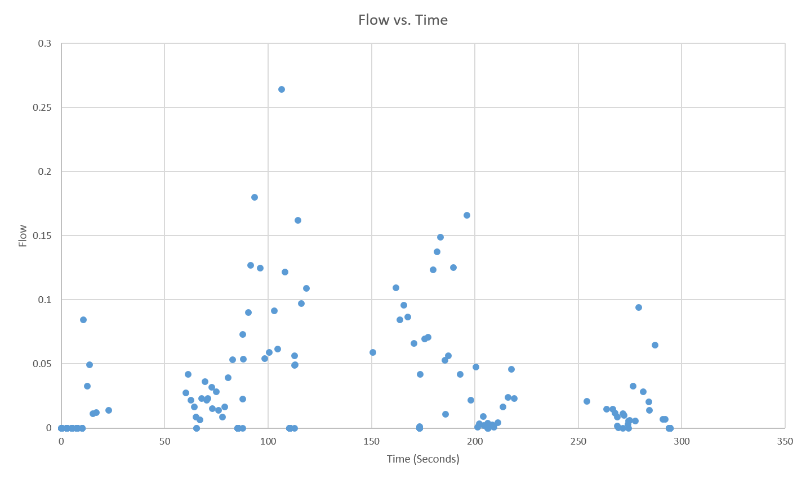 |
| Figure 23 - Flow vs Time during Recovery From Exercise |
| 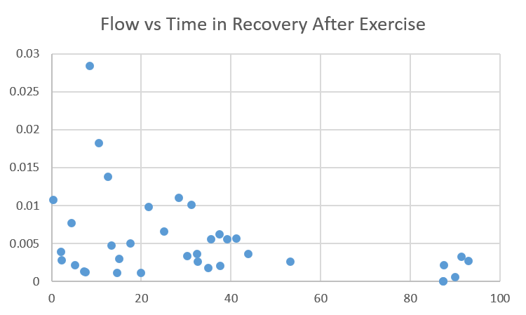 |
| Figure 24 - Flow vs Time during Recovery From Exercise |
Fitness Ranking Experiment
More specifically than simply ranking users by fitness, the goal of this experiment was to devise a formula that would return a fitness score to the user after he has completed a specified set of exercises.
Method, Participants and Data Collection
The exact details for the actual data collection are not available to as I did not carry out the experiment. However, I know the following; ten respiratory disease patients aged 45 and above completed 10 exercises and measured their breathing rate (using a RESpeck) after each of the exercises. Their breathing at rest was also measured. Further, comments about the fitness of paprticipants and a ranking of their fitness was included.
Data Processing
Mathematically, this problem is a linear regression problem. We generate a matrix X from our data, where the ith row contains the ith participants scores for different metrics (such as the average breathing rate, the maximum breathing rate or the variance of breathing rates) or exercises. From the given fitness ranking of our participants we generate a vector y, where the ith row contains the overall fitness score of the ith participant. We are now looking for a vector w such that w minimises the least squares summation := summation (yi - Xwi). This vector w is then given by the regression formula or it can simply be computed using y\X in Matlab.
The challenging part is choosing X. The number of rows is fixed at ten, but how can we choose our column dimension and how do we assign values to each column? The only two options that come to mind are to assign different scores to different exercises and to assign different scores to different metrics. Considering the four metrics; average breathing rate, breathing rate variance, minimum breathing rate and maximum breathing rate and the eleven different exercises (including at rest), this gives us 44 different scores to evaluate. However, the mathematical formulation of the problem gives us some restrictions. To attain a sensible answer, the row dimension of X must be larger than or equal to it's column dimension (an underdetermined system would lead to multiple dimensioned solution spaced). In fact the larger its row dimension is in relation to its column dimension the better. Obviously 44 is larger than 10 so the number of scores needs to be cut down. Just considering one metric for each exercise would yield 11 and still not be sufficient. Grouping exercises would be possible but seems futile because we don't know the details of the experiment. Considering each metric for all the exercises and then averaging over all the exercises would reduce the number of scores to four, leaving us with our matrix X.
Having chosen what should be score, there is still need for a way to score it. The method chosen here uses the sample mean and variance to generate a normal distribution, emulating a larger population. Each metric for each exercise for each participant can then be located on this normal distribution returning what percentile the participant scored for that particular metric and exercise.
The resulting w is [1.3903,0.4146,0.7445,0] where w provides weights for [avg,min,max,var] respecively.
Results
We can apply the vector w and the way of generating X to data from the previous experiment to test the quality of the method. The resulting ranking can then be compared to several other methods of ranking participants.
| 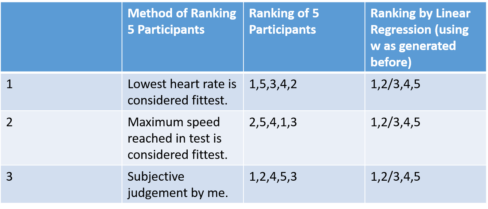 |
| Figure 25 - Comparison of Regression Ranking Method to other methods. |
Conclusion
The rankings of the five participants vary too much to be a useful indicator of how successful the method is. For better testing, the experiment could be expanded.
Calculations
| Calculation 1 |
Appendices
Appendix 1 - ECG Data
Appendix 2 - Phase 1
Appendix 3 - Phase 2a
Appendix 4 - Phase 2b
Appendix 5 - Phase 3a
Appendix 6 - Phase 3b
Appendix 7 - Phase 3c
Appendix 8 - Final
Appendix 9 - RESpeck data sample
References
1: Obstructive Pulmonary Disease: Definition and Epidemiology David M Mannino MD Accessed 2016-01-07
Links
L1: http://www.bloomberg.com/news/articles/2015-07-21/google-s-calico-to-scour-ancestry-com-data-for-longevity-genes L2: http://www.calicolabs.com/ L3: http://www.ecrc.ed.ac.uk/Researchers/item/Dr-Andy-Sims.html